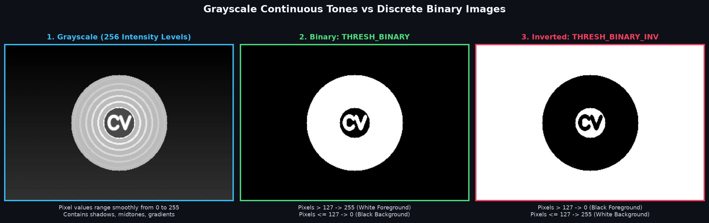
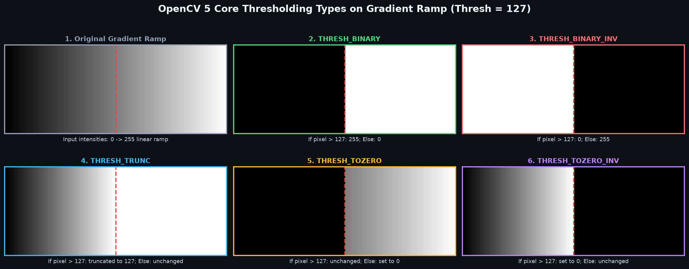
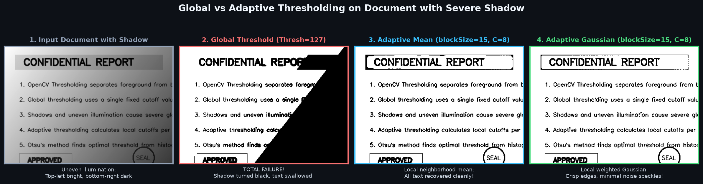
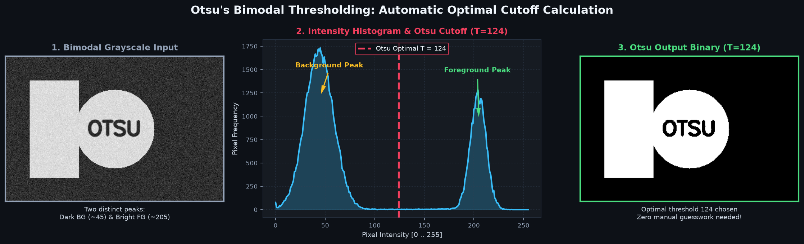

Learn how to binarize grayscale images into pure black and white: Simple global thresholding, inverse polarity, handling harsh document shadows with Adaptive thresholding, and automated bimodal cutoff using Otsu's method.
Computer Vision mein kisi image se main subject (Foreground) ko background se alag karne ka sabse direct aur fundamental tareeka Thresholding kehlata hai.
Yeh ek pixel classification technique hai jisme hum ek benchmark number (jise Threshold Value kehte hain, jaise 127) set karte hain:
255) assign ki jaati hai.0) assign ki jaati hai.255 bana deta hai aur likhe hue text ko deep black 0 bana deta hai. Is operation ko Image Binarization ya Document Thresholding kehte hain!
cv2.cvtColor(img, cv2.COLOR_BGR2GRAY) se single-channel grayscale mein convert karna anivarya (mandatory) hai.
Ek standard 8-bit grayscale image mein 256 possible intensity levels (0 se 255) hote hain jisme shadows, smooth gradients aur midtones shamil hote hain.
Lekin ek Binary Image mein sirf aur sirf do values hoti hain:
Standard conventions mein 0 background ya dark text ko darshata hai.
Standard object segmentation mein 255 foreground object ya paper background ko darshata hai.
Binary images computer vision ke downstream tasks (jaise OCR text extraction, finding object contours, counting items, aur shape detection) ke liye perfect input hoti hain kyunki isme koi confusing lighting variations nahi bachte.

cv2.threshold()OpenCV mein simple thresholding ke liye hum cv2.threshold() function use karte hain. Yeh function poori image par ek single fixed cutoff value lagata hai:
import cv2
# 1. Load image in grayscale
gray = cv2.imread("coin.jpg", cv2.IMREAD_GRAYSCALE)
# 2. Apply Simple Binary Thresholding
# Syntax: retval, dst = cv2.threshold(src, thresh, maxval, type)
ret, binary = cv2.threshold(gray, thresh=127, maxval=255, type=cv2.THRESH_BINARY)
# 3. Apply Inverted Binary Thresholding
ret_inv, binary_inv = cv2.threshold(gray, 127, 255, cv2.THRESH_BINARY_INV)Parameters Breakdown:
src: Input single-channel grayscale image array.thresh: Threshold cutoff value (e.g., 127).maxval: Value jo assign hogi agar pixel condition pass kare (standard 255).type: Thresholding algorithm flag (e.g., cv2.THRESH_BINARY).Return Values: Yeh function hamesha ek tuple (ret, dst) return karta hai:
ret: Used threshold value (simple thresholding mein wahi value jo aapne pass ki, jaise 127.0).dst: Resulting binary output image array.| Input Pixel Value | Condition (vs 127) | THRESH_BINARY Output |
THRESH_BINARY_INV Output |
|---|---|---|---|
40 (Dark shadow) |
40 ≤ 127 | 0 (Black) | 255 (White) |
127 (Boundary) |
127 ≤ 127 | 0 (Black) | 255 (White) |
185 (Bright coin) |
185 > 127 | 255 (White) | 0 (Black) |
OpenCV binary cutoff ke alawa 3 aur useful non-binary threshold types deta hai jo pixel values ko truncate ya zero kar sakte hain:
| Flag | Mathematical Logic | Visible Effect |
|---|---|---|
cv2.THRESH_TRUNC |
dst(x,y) = thresh if src(x,y) > thresh else src(x,y) |
Bright pixels threshold value par freeze (clip) ho jaate hain. Low values waise hi rehti hain. |
cv2.THRESH_TOZERO |
dst(x,y) = src(x,y) if src(x,y) > thresh else 0 |
Threshold se bright pixels waise hi rehte hain, baaki sab 0 (black) ban jaate hain. |
cv2.THRESH_TOZERO_INV |
dst(x,y) = 0 if src(x,y) > thresh else src(x,y) |
Threshold se bright pixels black ho jaate hain, dark pixels unaltered rehte hain. |

Global thresholding tab bilkul fail ho jati hai jab image mein uneven lighting ya partial shadows hon (jaise mobile se book ki photo lete waqt haath ki shadow padna).
Global thresholding poori image par ek hi cutoff lagati hai, jisse shadow wala poora hissa black blotch ban jata hai aur text gayab ho jata hai!
Adaptive Thresholding iska solution hai: Yeh poori image par ek cutoff nahi lagati, balki har pixel ke aas-paas ek chota neighborhood window (blockSize) leti hai aur local threshold calculate karti hai!
import cv2
# Adaptive Thresholding syntax
# blockSize: Neighborhood size (must be odd integer > 1, e.g. 11, 15)
# C: Constant subtracted from the calculated mean/gaussian (fine-tuning)
# Method 1: Adaptive Mean
adapt_mean = cv2.adaptiveThreshold(
gray, 255, cv2.ADAPTIVE_THRESH_MEAN_C, cv2.THRESH_BINARY, blockSize=15, C=8
)
# Method 2: Adaptive Gaussian (smoother, cleaner results)
adapt_gauss = cv2.adaptiveThreshold(
gray, 255, cv2.ADAPTIVE_THRESH_GAUSSIAN_C, cv2.THRESH_BINARY, blockSize=15, C=8
)Key Parameters Explained:
adaptiveMethod:
ADAPTIVE_THRESH_MEAN_C: Neighborhood pixels ka arithmetic average.ADAPTIVE_THRESH_GAUSSIAN_C: Gaussian bell curve ke weighted weights se average. (Industry standard for documents).blockSize: Area of pixel neighborhood. Yeh hamesha odd number > 1 (jaise 11, 15, 21) hona chahiye.C: Calculated mean/gaussian se subtract kiya jane wala constant offset number. Yeh background noise speckles ko control karta hai (typical values: 2 se 10).
Simple thresholding mein sabse bada sawaal yeh hota hai: "Mujhe threshold value 100 rakhni chahiye ya 150 ya 180?" Manual guessing time-wasting hoti hai.
Otsu's Binarization ek statistical algorithm hai jo image ke intensity histogram ko analyze karta hai aur automatically optimum threshold calculate karta hai jo background aur foreground clusters ke beech ki variance ko maximize karta hai!
import cv2
# Pass thresh=0, and combine THRESH_BINARY with THRESH_OTSU
# OpenCV calculates the optimal threshold and returns it in 'optimal_thresh'
optimal_thresh, binary_otsu = cv2.threshold(
gray, 0, 255, cv2.THRESH_BINARY + cv2.THRESH_OTSU
)
print(f"Otsu automatically calculated optimal threshold: {optimal_thresh}")thresh parameter ignore ho jata hai. Convention ke hisaab se hum 0 pass karte hain, aur calculated cutoff function ke pehle return value (optimal_thresh) mein mil jata hai!

Kab kaunsa thresholding method use karna chahiye? Yeh compact guide aapko sahi decision lene mein help karegi:
| Method | Speed | Cutoff Selection | Best Use-Case |
|---|---|---|---|
| Simple Global Threshold | Ultra Fast | Manual Fixed Value (e.g. 127) | Uniformly lit lab images, controlled camera environments. |
| Inverse Binary Threshold | Ultra Fast | Manual Fixed Value | Jab dark text ko white foreground aur light paper ko black background banana ho. |
| Adaptive Threshold (Gaussian) | Fast | Local Window Mean/Gaussian | Real-world document scans, paper under shadows, uneven outdoor lighting. |
| Otsu's Thresholding | Fast | Automated from Histogram | Bimodal contrast images, coins/cells on dark microscope backgrounds without guesswork. |
import cv2
# 1. Load image in grayscale
gray = cv2.imread("sample.jpg", cv2.IMREAD_GRAYSCALE)
# 2. Apply binary thresholding
ret_val, binary = cv2.threshold(gray, 127, 255, cv2.THRESH_BINARY)
ret_val_inv, binary_inv = cv2.threshold(gray, 127, 255, cv2.THRESH_BINARY_INV)
print(f"Applied threshold cutoff: {ret_val}")
print(f"Output shape: {binary.shape}")
# Save results
cv2.imwrite("output_binary.png", binary)
cv2.imwrite("output_binary_inv.png", binary_inv)import cv2
# Load shadowed document in grayscale
gray_doc = cv2.imread("shadowed_page.jpg", cv2.IMREAD_GRAYSCALE)
# Method A: Global threshold (fails on shadows)
_, global_res = cv2.threshold(gray_doc, 127, 255, cv2.THRESH_BINARY)
# Method B: Adaptive Gaussian (recovers shadowed text cleanly)
adaptive_res = cv2.adaptiveThreshold(
gray_doc, 255, cv2.ADAPTIVE_THRESH_GAUSSIAN_C, cv2.THRESH_BINARY, blockSize=15, C=8
)
cv2.imwrite("global_fail.png", global_res)
cv2.imwrite("adaptive_success.png", adaptive_res)import cv2
# Load image with distinct foreground and background
gray = cv2.imread("coins.jpg", cv2.IMREAD_GRAYSCALE)
# Calculate Otsu threshold automatically (pass thresh=0)
best_thresh, otsu_output = cv2.threshold(
gray, 0, 255, cv2.THRESH_BINARY + cv2.THRESH_OTSU
)
print(f"Otsu algorithm determined the optimal threshold to be: {best_thresh}")
cv2.imwrite("otsu_binarized.png", otsu_output)import cv2
# 1. Read document
doc = cv2.imread("scanned_receipt.jpg", cv2.IMREAD_GRAYSCALE)
# 2. Mild Gaussian blur to eliminate scanner graininess (from Topic 7!)
pre_blurred = cv2.GaussianBlur(doc, (3, 3), 0)
# 3. Apply Adaptive Gaussian thresholding for crisp text
ocr_ready = cv2.adaptiveThreshold(
pre_blurred, 255, cv2.ADAPTIVE_THRESH_GAUSSIAN_C, cv2.THRESH_BINARY, blockSize=11, C=4
)
cv2.imwrite("clean_for_ocr.png", ocr_ready)cv2.threshold(color_bgr, 127, 255, cv2.THRESH_BINARY)gray = cv2.cvtColor(img, cv2.COLOR_BGR2GRAY).
cv2.adaptiveThreshold(gray, 255, ..., blockSize=16, C=5)cv2.error: blockSize % 2 == 1 && blockSize > 1.blockSize hamesha odd number (11, 15, 21) hona chahiye!
binary = cv2.threshold(gray, 127, 255, cv2.THRESH_BINARY)binary ek tuple ban jata hai (127.0, <ndarray>). Agar aap cv2.imshow("Win", binary) karenge to crash hoga.ret, binary = cv2.threshold(...).
(ret, dst) return karta hai.blockSize) ke basis par alag-alag thresholds compute karta hai — shadows aur documents ke liye best.thresh argument ko 0 kyun set kiya jata hai?ret) mein return kar deta hai.
ret, binary = cv2.threshold(gray, 150, 255, cv2.THRESH_BINARY) mein agar input pixel value 170 hai, to output pixel value kya hogi?THRESH_BINARY, agar pixel value threshold (150) se badi hai (170 > 150), to use maxval (255) assign kiya jata hai.
Ab jab humne clean binary images banana seekh liya hai, agle topic mein hum seekhenge ki binary images par Erosion, Dilation, Opening, aur Closing laga kar chote holes kaise bhare jaate hain aur unwanted white noise speckles kaise remove kiye jaate hain!